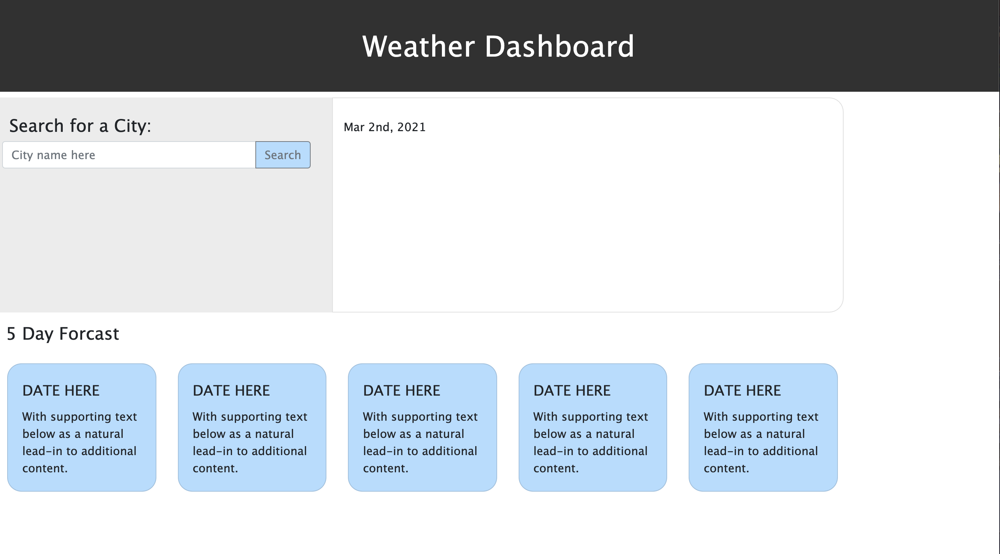

About Me

Hey I'm Dylan Jacob and I'm currently a student at the UNCC Charlotte Coding Bootcamp. I have basic knowledge in HTML, CSS JavaScript, NodeJS, experss, and MySQL.
Fresh Air Finder
This application was built to allow users to choose a state they would like to visit and choose from the list of all the National Parks in that state! You're also available to see the weather for each individual park in the form of a five day forcast modal. Once a park is selected, infomration including a park description, an image of the park, the address, telephone number, etc. are displayed on the webapge.
PokeBaller
Want to digitally track your Pokemon trading cards? Pokeballer is the app for you! This heroku app loads Pokemon TCG data and images where users can add their cards to a digital collection and view all the available cards for each pokemon.
Weather Dashboard
A weather dashboard that allows you to see the five day forcast and present day forcast of an entered state. This is currently a work in progress.
Future Project
luctus odio rhoncus. Sed semper massa ut cursus congue. Maecenas varius efficitur leo nec interdum. Ut molestie eleifend ligula, eu scelerisque velit tincidunt ac. Nunc fermentum mi ultrices, blandit urna quis, auctor metus.

Future Project ◇ Website ◇ Repository
Future Project
luctus odio rhoncus. Sed semper massa ut cursus congue. Maecenas varius efficitur leo nec interdum. Ut molestie eleifend ligula, eu scelerisque velit tincidunt ac. Nunc fermentum mi ultrices, blandit urna quis, auctor metus.

Future Project ◇ Website ◇ Repository